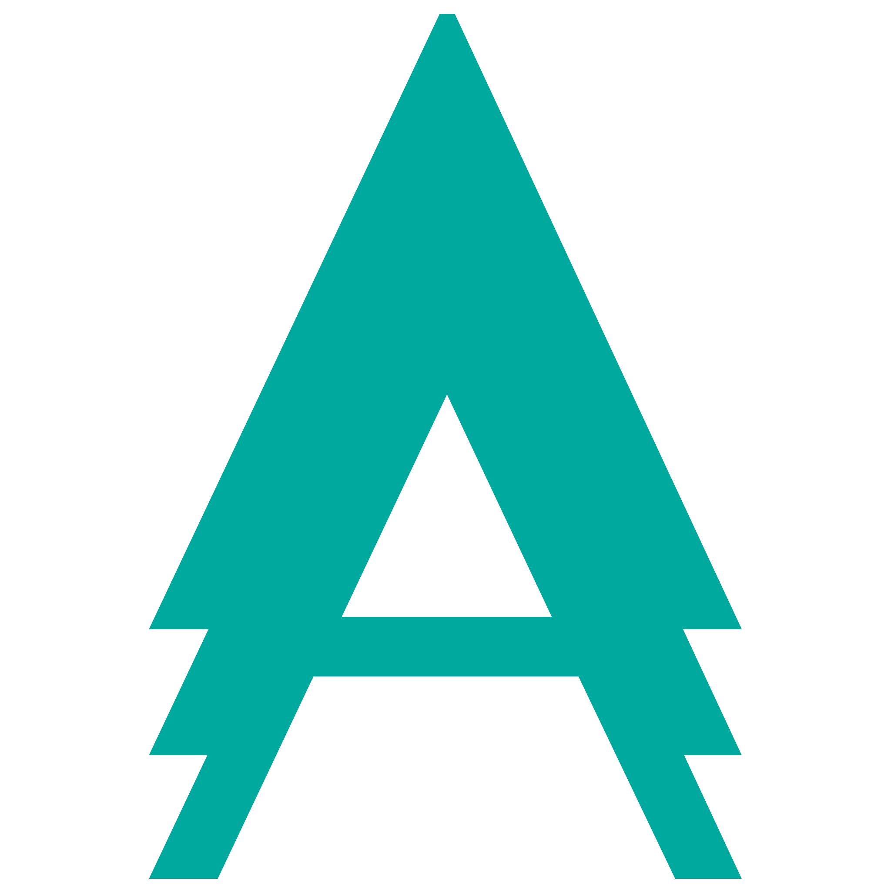

A workplace that is a alive create ideas that live on.
Themes
-
Aloha
- This rich theme includes exotic coconuts spilling all over the floor combined with palm trees that hang down and are always in the way of your daily workflow. This theme is very complicated, suitable for complex startups with a unclear monetizing strategy.
-
Siberia
- Dead plants everywhere. Plants sprayed with white color to give that cold secluded look.
-
Exotique Nørdic
- Everything is pine and spruce. Get that Norrlands inland-look in your office. Comes with a Christmas Decoration Extension Pack for the first 100 subscribers (Bears not included).